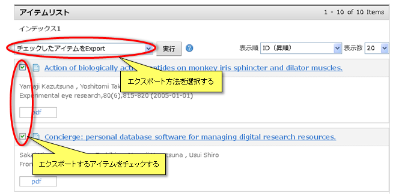

アイテム検索
「トップ」タブをクリックすると、キーワード検索欄、インデックス一覧、インデックスツリーが表示されます。
これらを用いて公開中のインデックスおよびアイテムを検索し、アイテムを閲覧することができます。
各項目の詳細は簡易検索、詳細検索、インデックス検索、著者名検索をご覧ください。

これらを用いて公開中のインデックスおよびアイテムを検索し、アイテムを閲覧することができます。
各項目の詳細は簡易検索、詳細検索、インデックス検索、著者名検索をご覧ください。
インデックス検索
インデックス一覧
ツリー編集でインデックス一覧に表示するよう設定したインデックスの表示名がプルダウン内に表示されます。
プルダウンからインデックスを選択すると、選択したインデックスのインデックスリストとアイテムリストが表示されます。
【注意事項】
プルダウンからインデックスを選択すると、選択したインデックスのインデックスリストとアイテムリストが表示されます。
【注意事項】
インデックスツリー
簡易検索
指定したキーワードに該当するアイテムの検索と閲覧ができます。
「メタデータ検索」にチェックを入れ検索すると、登録されたアイテム内のメタデータから検索した結果を表示します。
「全文検索」にチェックを入れ検索すると、登録されたアイテム内のメタデータと登録されたファイルの内容から検索した結果を表示します。
「メタデータ検索」にチェックを入れ検索すると、登録されたアイテム内のメタデータから検索した結果を表示します。
「全文検索」にチェックを入れ検索すると、登録されたアイテム内のメタデータと登録されたファイルの内容から検索した結果を表示します。
詳細検索
指定したキーワードと条件に該当するアイテムの検索と閲覧ができます。
一覧リンクをクリックしたときに表示される選択候補は下記のようになります。
各検索条件に対応するJuNii2マッピングについてはWEKO管理をご参照ください。
検索条件を選択およびテキストボックスに検索キーワードを入力し、「検索」ボタンをクリックすると検索結果がリストで表示されます。
検索結果表示の詳細はアイテムリストをご覧ください。
詳細検索の初期表示状態およびプルダウンで選択可能な検索条件については管理画面で設定できます。
設定方法についてはWEKO管理をご覧ください。
一覧リンクをクリックしたときに表示される選択候補は下記のようになります。
各検索条件に対応するJuNii2マッピングについてはWEKO管理をご参照ください。
| 検索条件項目名 | 一覧ポップアップの選択値 | 備考 |
|---|---|---|
| 件名・分類 |
NIIsubject NDC NDLC BSH NDLSH MeSH DDC LCC UDC LCSH |
|
| アイテムタイプ | WEKOに登録済のアイテムタイプ。 | |
| 資源タイプ |
Journal Article Thesis orDissertation DepartmentalBulletin Paper ConferencePaper Presentation Book Technical Report ResearchPaper Article Preprint Learning Material Data orDataset Software Others 自由記述 |
一覧ポップアップで「自由記述」を選択した場合は、Niitypeから検索を行う。 一覧ポップアップで「自由記述」以外を選択した場合は、Junii2マッピングが「type」のメタデータから検索を行う。 |
| ID |
identifier URI fullTextURL selfDOI ISBN ISSN NCID pmid doi NAID ichushi |
|
| 言語 |
日本語 英語 フランス語 イタリア語 ドイツ語 スペイン語 中国語 ロシア語 ラテン語 マレー語 エスペラント語 アラビア語 ギリシャ語 朝鮮語 |
|
| 権利 |
BY BY-SA BY-ND BY-NC BY-NC-SA BY-NC-ND すべて 自由記述 |
検索対象・・・ファイルのライセンスを含む。 「すべて」にチェックがある場合、他の候補は選択不可とする。 ※注意 一覧ポップアップで1つもチェックを入れなかった場合は、Junii2マッピングが「rights」のメタデータから検索する。 一覧ポップアップでいずれかにチェックを入れた場合は、以下のように検索する。 一覧ポップアップで「自由記述」にチェックを入れた場合 …ファイルライセンスの自由記述文字列から検索する。 一覧ポップアップで「自由記述」にチェックを入れなかった場合 …ファイルライセンスマスタのIDから検索する。 |
| 著者版フラグ |
author publisher ETD none |
|
| インデックス | WEKOに登録されているインデックスの一覧 |
検索条件を選択およびテキストボックスに検索キーワードを入力し、「検索」ボタンをクリックすると検索結果がリストで表示されます。
検索結果表示の詳細はアイテムリストをご覧ください。
詳細検索の初期表示状態およびプルダウンで選択可能な検索条件については管理画面で設定できます。
設定方法についてはWEKO管理をご覧ください。
著者名検索
検索結果または詳細画面の著者名メタデータのリンクから実施ができます。
関連ワード検索
詳細画面の「コンテンツに関連する検索キーワード」のリンクから実施ができます。
検索結果
検索結果は、インデックスに応じて一覧形式または目次形式のいずれかで表示されます。
一覧形式
■目次形式
一覧形式
選択したインデックスの子インデックス(インデックスリスト)ならびにインデックスに所属するアイテム(アイテムリスト)の一覧が表示されます。
各リストの詳細はインデックスリストおよびアイテムリストをご覧ください。
「インデックスツリー」の文字をクリックすると、ルートインデックスのインデックスリストが表示されます。
また、インデックスツリーのをクリックすると別ウインドウが開き、ルートインデックス以下のインデックスの情報をOAI-ORE形式で画面に表示します。
各リストの詳細はインデックスリストおよびアイテムリストをご覧ください。
「インデックスツリー」の文字をクリックすると、ルートインデックスのインデックスリストが表示されます。
また、インデックスツリーのをクリックすると別ウインドウが開き、ルートインデックス以下のインデックスの情報をOAI-ORE形式で画面に表示します。
■目次形式
指定したインデックスの検索結果の表示形式が目次形式の場合に見出しの一覧が表示されます。
また、登録されたサムネイルが表示されます。
また、登録されたサムネイルが表示されます。
インデックスリスト
選択した親インデックス以下に所属する子インデックスが表示されます。
またはインデックス名をクリックすると、そのインデックス内の子インデックスおよびアイテムの検索と閲覧ができます。
 をクリックすると別ウインドウが開き、そのインデックス以下の新着アイテムの情報をRSS形式で画面に表示します。
をクリックすると別ウインドウが開き、そのインデックス以下の新着アイテムの情報をRSS形式で画面に表示します。
をクリックすると別ウインドウが開き、そのインデックス以下のインデックスおよびアイテムの情報をOAI-ORE形式で画面に表示します。
【注意事項】
またはインデックス名をクリックすると、そのインデックス内の子インデックスおよびアイテムの検索と閲覧ができます。
をクリックすると別ウインドウが開き、そのインデックス以下の新着アイテムの情報をRSS形式で画面に表示します。をクリックすると別ウインドウが開き、そのインデックス以下のインデックスおよびアイテムの情報をOAI-ORE形式で画面に表示します。
【注意事項】
-
RSSおよびOAI-ORE形式の表示を行うにはメタデータのマッピング設定がされている必要があります。
マッピング設定についてはアイテムタイプ管理(OAH-PMHマップ)をご覧ください。
アイテムリスト
アイテムリストの表示
選択したインデックスに所属するアイテムおよび指定したキーワードに該当するアイテムの概要を閲覧できます。
アイテムタイトルをクリックすると、そのアイテムの詳細情報が閲覧できます。
詳細情報の表示についてはアイテム詳細をご覧下さい。
アイテムタイプメタデータ編集にてメタデータ属性が『ファイル』の項目のオプションに 『一覧表示』を設定している場合、ボタンが表示されます。
【注意事項】
■表示順の変更
 をクリックするとアイテムリストの次ページが表示されます。
をクリックするとアイテムリストの次ページが表示されます。
 をクリックするとアイテムリストの前ページが表示されます。
をクリックするとアイテムリストの前ページが表示されます。
ページ番号をクリックすると指定したページが表示されます。
アイテムタイトルをクリックすると、そのアイテムの詳細情報が閲覧できます。
詳細情報の表示についてはアイテム詳細をご覧下さい。
アイテムタイプメタデータ編集にてメタデータ属性が『ファイル』の項目のオプションに 『一覧表示』を設定している場合、ボタンが表示されます。
| ボタンの種類 | 状態 |
|---|---|
| ダウンロードボタン | アイコンをクリックするとファイル保存ダイアログが起動し、そのファイルをダウンロードすることができます。 |
【注意事項】
-
Flash形式でファイルを閲覧するためにはIDサーバーと連携できている必要があります。
IDサーバーの設定についてはPrefixID取得をご覧ください。 - ファイルダウンロード方式の設定については運用設定のアイテム管理をご覧ください。
■表示順の変更
アイテムの表示順を下記の項目から選択し、変更することができます。
新たな検索を行った場合はデフォルトで設定されている表示順で表示されます。
■表示数の変更新たな検索を行った場合はデフォルトで設定されている表示順で表示されます。
| 表示順 | 内容 |
|---|---|
| タイトル(昇順) | アイテムタイトルについて昇順で並べ替えます。 |
| タイトル(降順) | アイテムタイトルについて降順で並べ替えます。 |
| 登録者(昇順) | アイテムの登録者名について昇順で並べ替えます。 |
| 登録者(降順) | アイテムの登録者名について降順で並べ替えます。 |
| アイテムタイプ(昇順) | アイテムタイプのID順について昇順で並べ替えます。 |
| アイテムタイプ(降順) | アイテムタイプのID順について降順で並べ替えます。 |
| WEKOID(昇順) | アイテムごとに発行されたID順に昇順で並べ替えます。 |
| WEKOID(降順) | アイテムごとに発行されたID順に降順で並べ替えます。 |
| 更新日時(昇順) | アイテムの更新日時について昇順で並べ替えます。 |
| 更新日時(降順) | アイテムの更新日時について降順で並べ替えます。 |
| 作成日時(昇順) | アイテムの作成日時について昇順で並べ替えます。 |
| 作成日時(降順) | アイテムの作成日時について降順で並べ替えます。 |
| 査読日時(昇順) | アイテムの査読日時について昇順で並べ替えます。 |
| 査読日時(降順) | アイテムの査読日時について降順で並べ替えます。 |
| 出版年(昇順) |
アイテムの書誌情報メタデータの発行年月日について昇順で並べ替えます。 発行年月日のメタデータを持たないアイテムは発行されたID順に昇順で並べ替えます。 |
| 出版年(降順) |
アイテムの書誌情報メタデータの発行年月日について降順で並べ替えます。 発行年月日のメタデータを持たないアイテムは発行されたID順に降順で並べ替えます。 |
1ページあたりのアイテム表示数を下記の項目から選択し、変更することができます。
表示数は20, 50, 75, 100の4種類から選択できます。
新たな検索を行った場合はデフォルトで設定されている表示数で表示されます。
■ページ切り替え表示数は20, 50, 75, 100の4種類から選択できます。
新たな検索を行った場合はデフォルトで設定されている表示数で表示されます。
をクリックするとアイテムリストの次ページが表示されます。をクリックするとアイテムリストの前ページが表示されます。ページ番号をクリックすると指定したページが表示されます。
エクスポート＆印刷
アイテムリストに表示されたアイテムの情報をWEKOインポート形式でダウンロードすることができます。
また、現在表示しているアイテムリストを印刷することができます。
■エクスポート
また、現在表示しているアイテムリストを印刷することができます。
■エクスポート
エクスポートするアイテムを選択し「実行」ボタンをクリックすると、エクスポート確認画面が表示されます。

エクスポート確認画面では、選択したアイテムのタイトルが表示されます。
「エクスポート」ボタンをクリックするとファイル保存ダイアログが起動し、選択した形式のファイルをダウンロードすることができます。
選択可能な形式は下記の通りです。
【注意事項】
■印刷| 項目 | 内容 |
|---|---|
| チェックしたアイテムをExport |
アイテムリストのチェックボックスにチェックをいれたアイテムのみをエクスポートします。 |
| 全てのアイテムをExport |
アイテムリストに表示されているアイテムを全てエクスポートします。 |
エクスポート確認画面では、選択したアイテムのタイトルが表示されます。
「エクスポート」ボタンをクリックするとファイル保存ダイアログが起動し、選択した形式のファイルをダウンロードすることができます。
選択可能な形式は下記の通りです。
- WEKOインポート形式
- BIBTEX形式
- OAI-PMH形式
- SWRC形式
- ELS形式
- TSV形式
【注意事項】
- ファイルのダウンロード権限がない場合は添付ファイルはエクスポートされません。
- 管理者がファイルのエクスポートを制限している場合は添付ファイルはエクスポートされません。
- TSV形式でExportしたファイルをExcelで開く場合、ファイル指定で開かなければ正常に開けません。
印刷するアイテムを選択し「実行」ボタンをクリックすると印刷用画面が表示され、印刷ダイアログが起動します。
| 項目 | 内容 |
|---|---|
| チェックしたアイテムを印刷 |
アイテムリストのチェックボックスにチェックをいれたアイテムのみリスト化し、印刷用レイアウトで表示します |
| 全てのアイテムを印刷 |
アイテムリストを印刷用レイアウトで表示します。 |